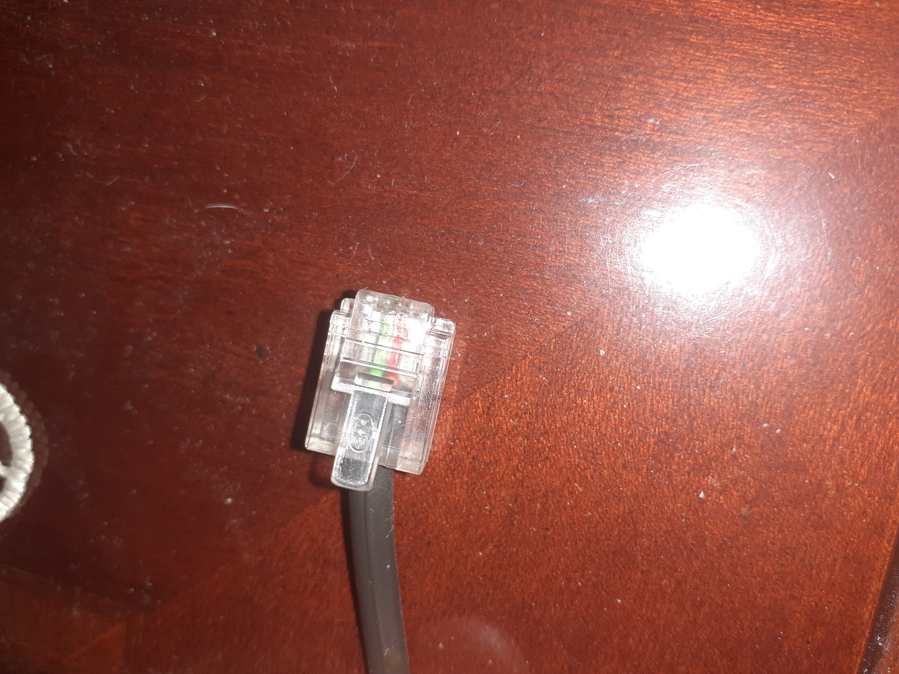

Connettore ethernet

il connettore ethernet o RJ45 indica una interfaccia fisica usata per l'attestazione di cavi elettrici a coppie di conduttori incrociati,
destinati ai servizi telefonici e di trasmissione dati.
Questa sigla è comunemente utilizzata per indicare il connettore utilizzato nei cablaggi di rete;
il connettore RJ45 è utilizzato in particolare per il cablaggio delle reti locali secondo gli standard Ethernet.